Environment Setup and Java Servlet Example
NetBeans IDE is one of the tool commonly used by a developer that provides facilities to computer programmers for software development. So here, we will be demonstrating in setting up the your first servlet application.
Creating First Servlet Application using NetBeans IDE
- We will setup the Servlet first in using Integrated Development Environment(IDE) on NetBeans. Developers take it as the easiest way to create Servlet Applications. So, the first step is, open the NetBeans IDE, under the nav bar select File and click the New Project to create a project. 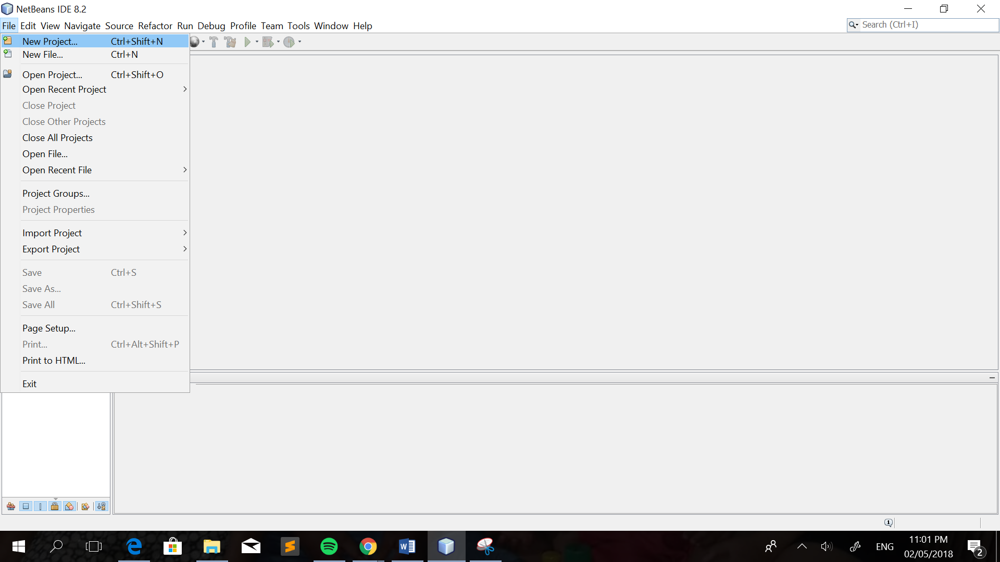
- After that, you will navigate to a page wherein you will choose the category (e.g. Java, Java Web, Java EE, Maven, NetBeans Module, Samples). Click the Java Web. This will create an empty Web application in a standard IDE project. 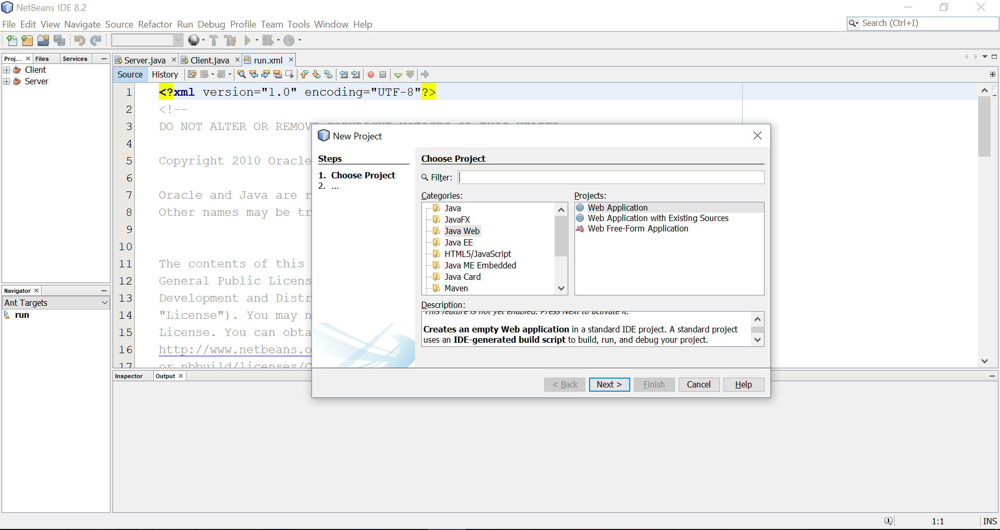
- Set the project name. If you want to change the location of the file then edit on the Project Location. Then click Next. 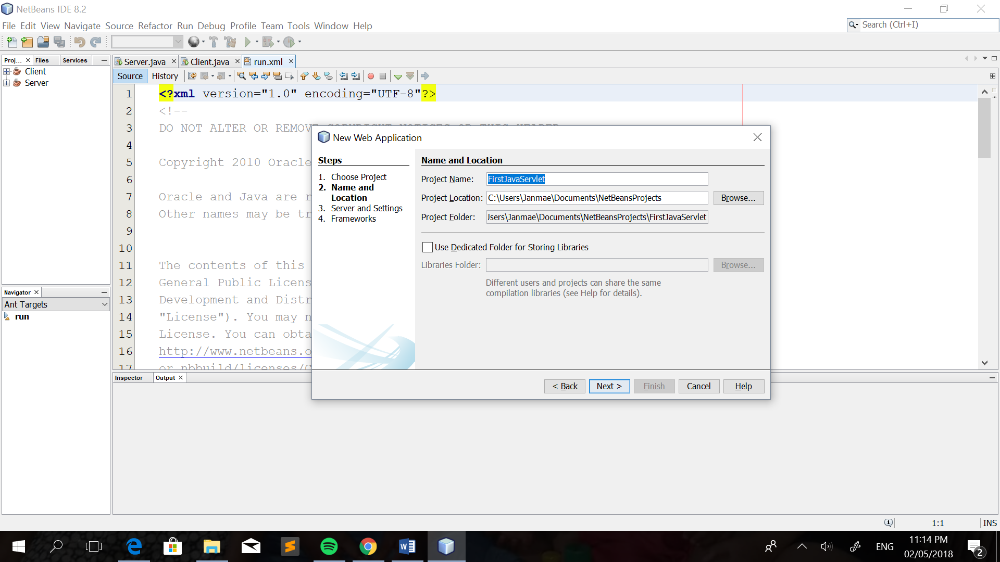
- After that, you will be directed to the next step wherein you will specify the server that you will use, for this tutorial, we will use GlassFish Server. It is already built-in on the Java NetBeans IDE. But you can add a server like the most popular server, the Apache Tomcat, just click on the ‘Add’ button. Then click ‘Finish’. 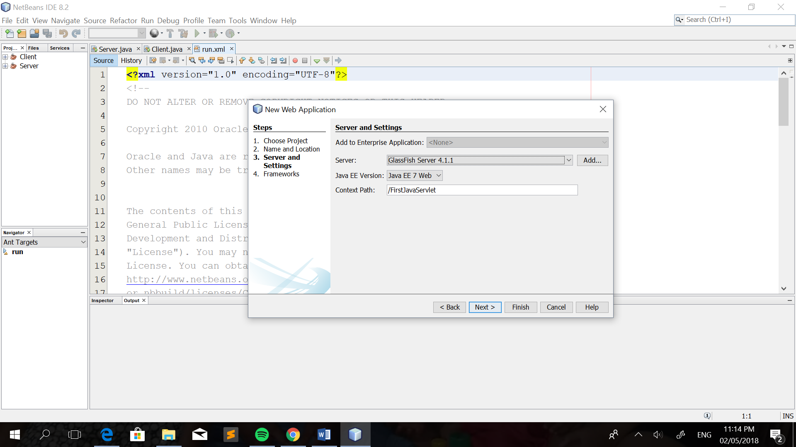
- After the project is created, the complete directory structure required for the Servlet Application will be created automatically by the IDE. 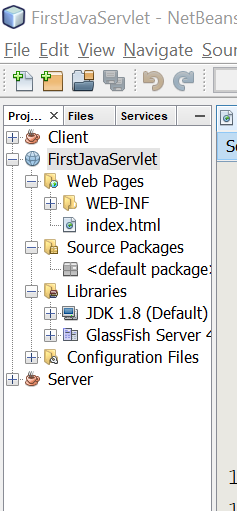
- . In creating a servlet, open Source Package, right click on default packages and then click New and finally click Servlet. Provide the name of your class, for this tutorial, I will have named it ‘MyFirstServlet’. Then click ‘Next’. 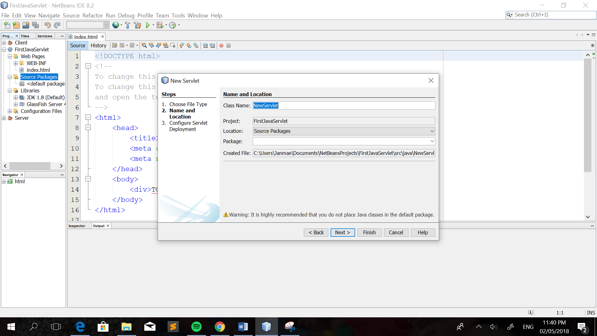
- Next will be, tick the box indicating ‘Add information……’. This will add servlet information in web.xml file, it will auto generate the codes that are needed. Then click ‘Finish’. 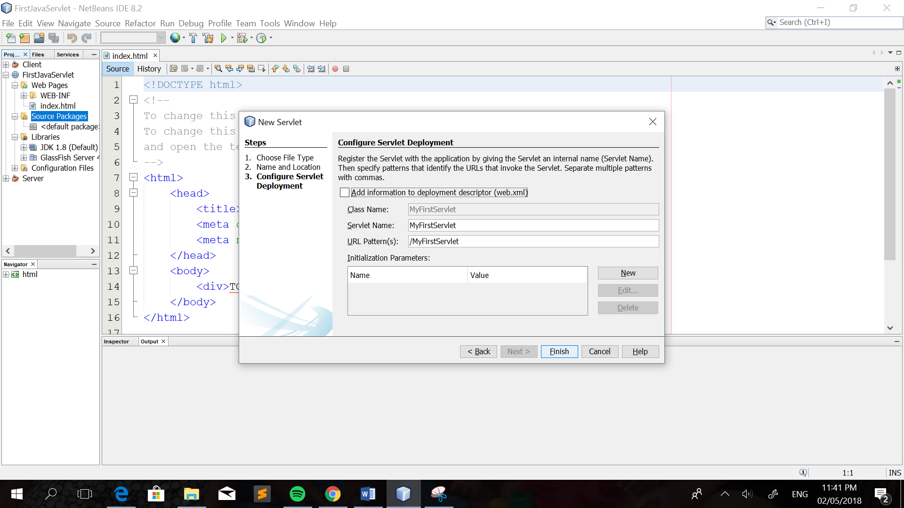
- After that, the servlet class is already been created.You can edit and add codes if you want. 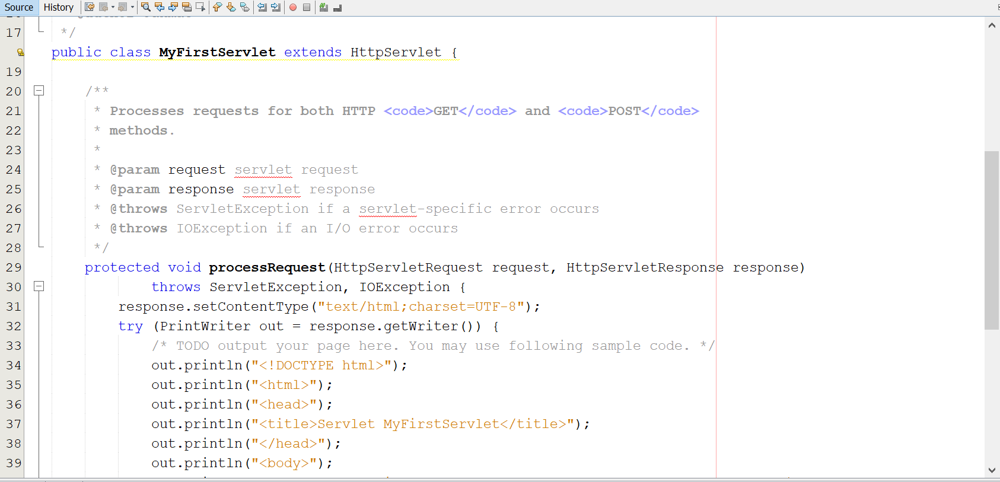
- When creating a HTML file, right click on the WEB-INF folder located at the left pane under the FirstServlet Project, click new and then HTML. After creating the HTML file. Put the name of the HTML file, it is recommended to name it index, because browser will always pick up the index.html file automatically from a directory. 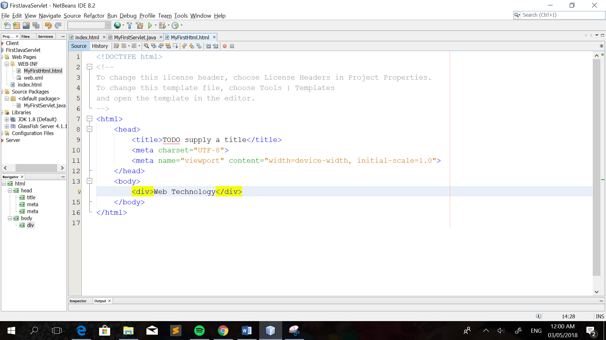
- Next, edit web.xml file. In the web.xml file, add the following code highlighted. And the save it. Then, right click on your Project and select Run. 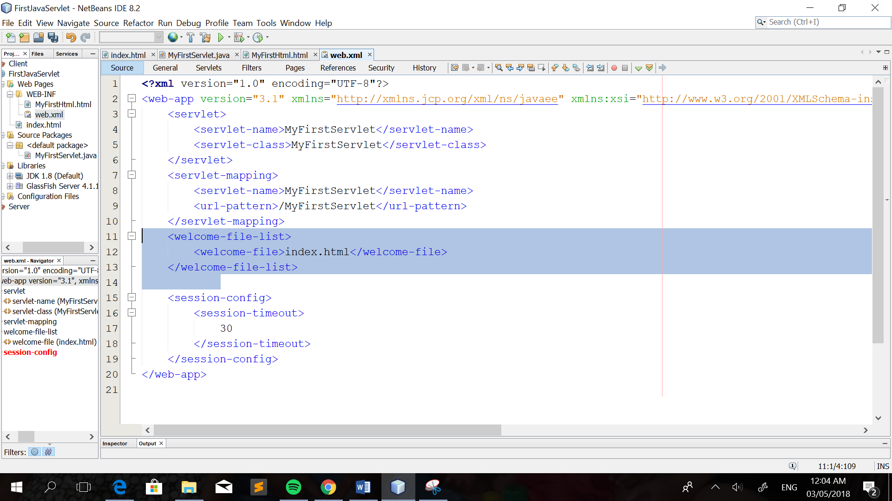
- Finally, you have been successfully created your first-class servlets. 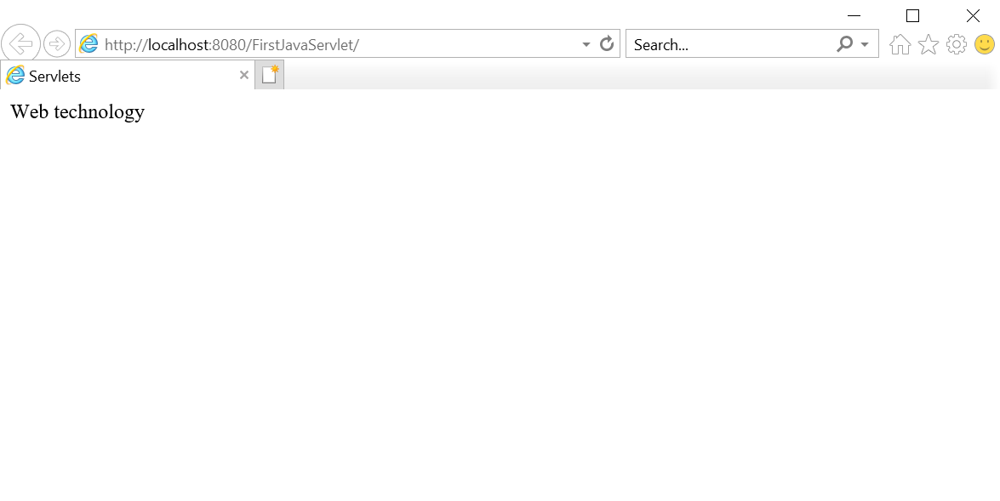
The context path will be added on the URL address if you want to view the file created on the web.
Example:
As you can see on the figure, the WEB-INF folder contains the index.html file and the libraries like the JDK 1.8 and the server library is found and stored on the Libraries folder.